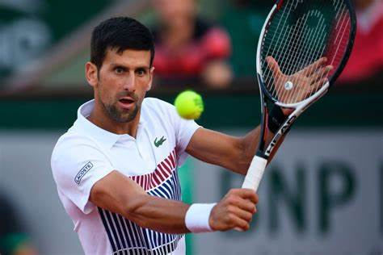

Novak Djokovic

Djokovic began playing tennis at the age of four, after his parents gave him a mini-racket and a soft foam ball, which his father said became "the most beloved toy in his life". His parents then sent him to a tennis camp in Novi Sad. In the summer of 1993, as a six-year-old, he was sent to a tennis camp organized by the Teniski Klub Partizan and overseen by Yugoslav tennis player Jelena Genčic at Mount Kopaonik, where Djokovic's parents ran a fast-food parlour.Genčić worked with Djokovic over the following six years, convincing him to hit his backhand with two hands instead of the single hand used by his idol, Pete Sampras. Djokovic has credited Genčić for "shaping my mind as a human being, but also as a professional".
During the Yugoslav Wars in the late 1990s, Serbia had to endure embargoes and NATO bombings because of the Kosovo War. but that fear and exhaustion made him tougher and drove him to pursue tennis with greater determination. At one point he had to train inside a disused swimming pool converted into a tennis court. Due to his rapid development, Genčić contacted Nikola Pilić and in September 1999 Djokovic moved to the Pilić tennis academy in Oberschleißheim, Germany, spending four years there. Pilić made him serve against a wall for several months to improve his technique, and he had him working with a rubber exercise band for a year to improve flexibility in his wrist. One of the players he trained with at the Niki Pilić academy was future world No. 10 Ernests Gulbis, with whom he allegedly had a fiery rivalry.
Major trophies
- 2006-2007 Australian open
- 2006 French
- 2006 Wimbledon
- 2006 US open